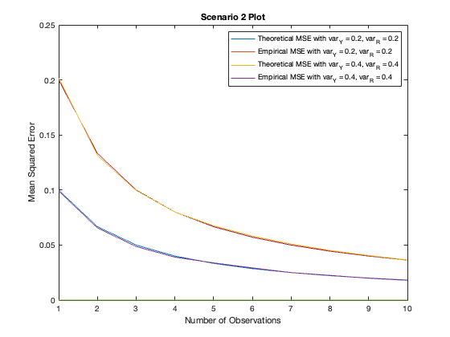
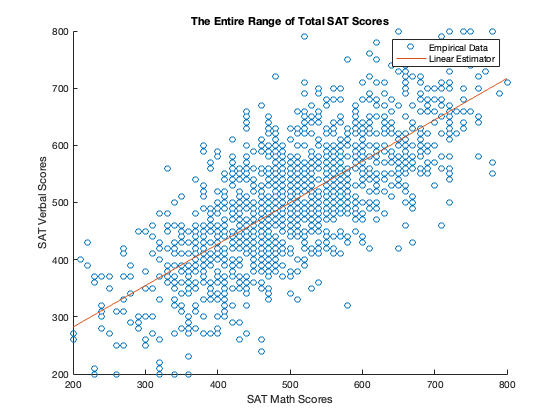
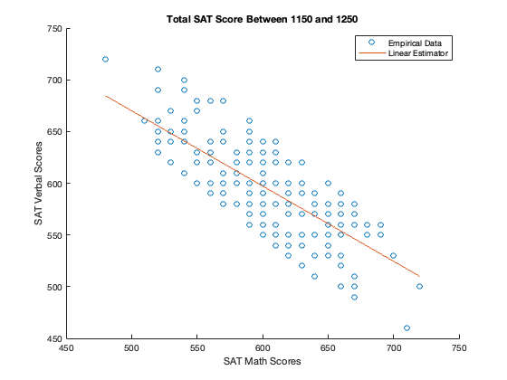
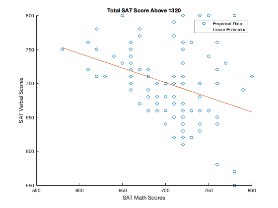

Hailey Hayoon Chung and Eric Taeyoo Kim
ECE 302 - Project 2
Contents
Scenario 1
clc; clear; close all; % Simulate this system by random draws of Y and W, and then estimating Y from the observations X = Y + W. N = 10000; Y = unifrnd(-1,1,[N 1]); W = unifrnd(-2,2,[N 1]); X = Y + W; % Bayes MMSE Estimator MMSE_bayes = zeros(N,1); % Taking a look at eq (8.30), breakdown x into three pieces: piece1 = (X<-1) & (X>=-3); piece2 = (X<1) & (X>=-1); piece3 = (X<=3) & (X>=1); MMSE_bayes(piece1) = (1/2) + (1/2) * X(piece1); MMSE_bayes(piece2) = 0; MMSE_bayes(piece3) = -(1/2) + (1/2) * X(piece3); % Empirical Mean Square Error using MMSE_bayes: MSE_bayes = mean((Y-MMSE_bayes).^2); % Empirical Mean Square Error - Eq (8.31): % MSE_bayes(piece1) = ((3+X(piece1)).^2)/(12); % MSE_bayes(piece2) = 1/3; % MSE_bayes(piece3) = ((3-X(piece3)).^2)/(12); % MSE_bayes_empirical = mean(MSE_bayes); % Theoretical Bayes MSE = 1/4 (on page 149 of textbook) MSE_bayes_theoretical = 1/4; % Linear MMSE Estimator corr = corrcoef(X,Y); rho = corr(1,2); MMSE_linear = mean(Y) + rho * (std(Y)/std(X)) * (X - mean(X)); % Empirical Mean Square Error using MMSE_linear: MSE_linear = mean((Y-MMSE_linear).^2); % Theoretical linear MSE = 4/15 (on page 154 of textbook) MSE_linear_theoretical = 4/15; % Define the data for the table % I didn't know how to create a table in Matlab, so I received some help % from chatgpt...! estimators = {'Bayesian MMSE'; 'Linear MMSE'}; empirical_MSEs = [MSE_bayes; MSE_linear]; theoretical_MSEs = [MSE_bayes_theoretical; MSE_linear_theoretical]; % Create the table results_scenario1 = table(estimators, empirical_MSEs, theoretical_MSEs, 'VariableNames', {'Estimator', 'Empirical MSE', 'Theoretical MSE'}); % Display the table disp(results_scenario1);
Estimator Empirical MSE Theoretical MSE
_________________ _____________ _______________
{'Bayesian MMSE'} 0.25244 0.25
{'Linear MMSE' } 0.26933 0.26667
Scenario 2
clc; clear; close all; N = 10000; % Arbitrary number of observations n_obsv = 10; % Experiment with a few different variances for both Y and R var_Y = [0.2, 0.4]; var_R = [0.2, 0.4]; MSE_t_list_1 = zeros(n_obsv); MSE_e_list_1 = zeros(n_obsv); MSE_t_list_2 = zeros(n_obsv); MSE_e_list_2 = zeros(n_obsv); for i=1:n_obsv [MSE_t_1, MSE_e_1] = multiple_noisy_obs(i, var_Y(1), var_R(1), N); MSE_t_list_1(i) = MSE_t_1; MSE_e_list_1(i) = MSE_e_1; [MSE_t_2, MSE_e_2] = multiple_noisy_obs(i, var_Y(2), var_R(2), N); MSE_t_list_2(i) = MSE_t_2; MSE_e_list_2(i) = MSE_e_2; end figure(1) plot(MSE_t_list_1); hold on; plot(MSE_e_list_1); plot(MSE_t_list_2); plot(MSE_e_list_2); hold off; legend("Theoretical MSE with var_Y = 0.2, var_R = 0.2", ... "Empirical MSE with var_Y = 0.2, var_R = 0.2", ... "Theoretical MSE with var_Y = 0.4, var_R = 0.4", ... "Empirical MSE with var_Y = 0.4, var_R = 0.4"); xlabel("Number of Observations"); ylabel("Mean Squared Error"); title("Scenario 2 Plot")
Scenario 3
clc; clear; close all; load("SATs.mat"); % Data Cleaning SAT_Math = SAT_Math(2:end,1); SAT_Verbal = SAT_Verbal(2:end,1); total_SAT = SAT_Math + SAT_Verbal; % 1. The entire range of total SAT scores figure(2) subset1 = SAT_estimator(SAT_Math,SAT_Verbal,'The Entire Range of Total SAT Scores'); % 2. Total SAT score between 1150 and 1250 figure(3) index2 = (total_SAT>=1150) & (total_SAT<=1250); subset2 = SAT_estimator(SAT_Math(index2),SAT_Verbal(index2), 'Total SAT Score Between 1150 and 1250'); % 3. Total SAT score above 1320 figure(4) index3 = (total_SAT>1320); subset3 = SAT_estimator(SAT_Math(index3), SAT_Verbal(index3), 'Total SAT Score Above 1320'); % Comment % When we determine the estimator and plot for the entire range, the % estimator is on an increasing trend. However, when we focus on smaller % ranges (ex/ between 1150 and 1250, or above 1320), the estimator line is % on a decreasing trend.  
Functions
% A function to calculate both theoretical and empirical MSEs given number % of observations, N, and variance of Y and R. function [MSE_theoretical, MSE_empirical] = multiple_noisy_obs(n_obsv, var_Y, var_R, N) for i = 1:n_obsv Y = normrnd(1, sqrt(var_Y),[N 1]); R = normrnd(0, sqrt(var_R), [N i]); X = Y+R; end Y_hat = ((var_R) + var_Y * (sum(X,2)))/(i*var_Y + var_R); MSE_theoretical = (var_Y * var_R)/(n_obsv .* var_Y + var_R); MSE_empirical = mean((Y-Y_hat).^2); end function linearEstimator = SAT_estimator(math, verbal, plottitle) mean_math = mean(math); mean_verbal = mean(verbal); var_math = var(math); cov_math_verbal = cov(math, verbal); cov_math_verbal = cov_math_verbal(1,2); beta1 = cov_math_verbal / var_math; beta0 = mean_verbal - beta1 * mean_math; scatter(math, verbal); hold on; x = linspace(min(math), max(math), 100); y = beta0 + beta1 * x; plot(x, y); xlabel('SAT Math Scores'); ylabel('SAT Verbal Scores'); title(plottitle); legend('Empirical Data', 'Linear Estimator'); hold off; % Store linear estimator coefficients for output linearEstimator.beta0 = beta0; linearEstimator.beta1 = beta1; end